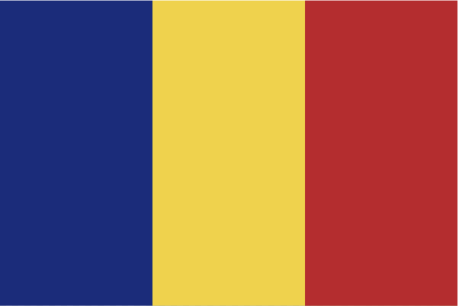
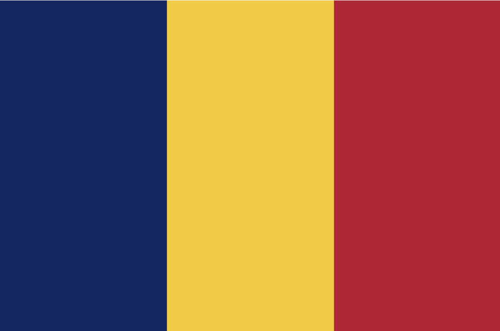
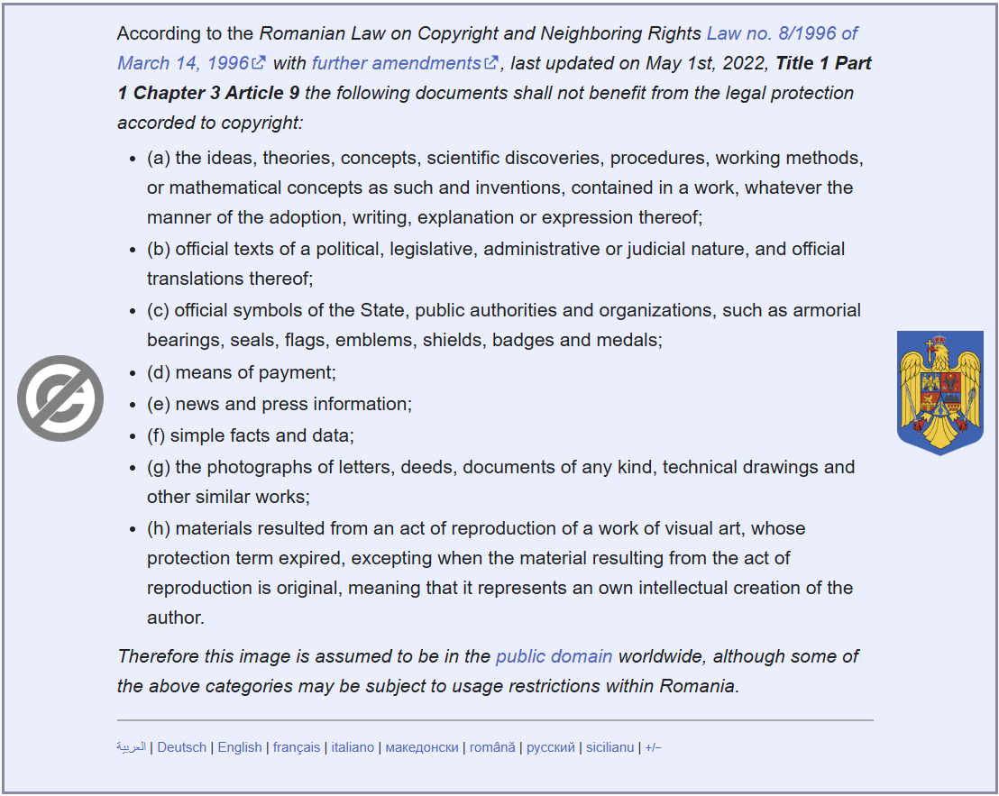
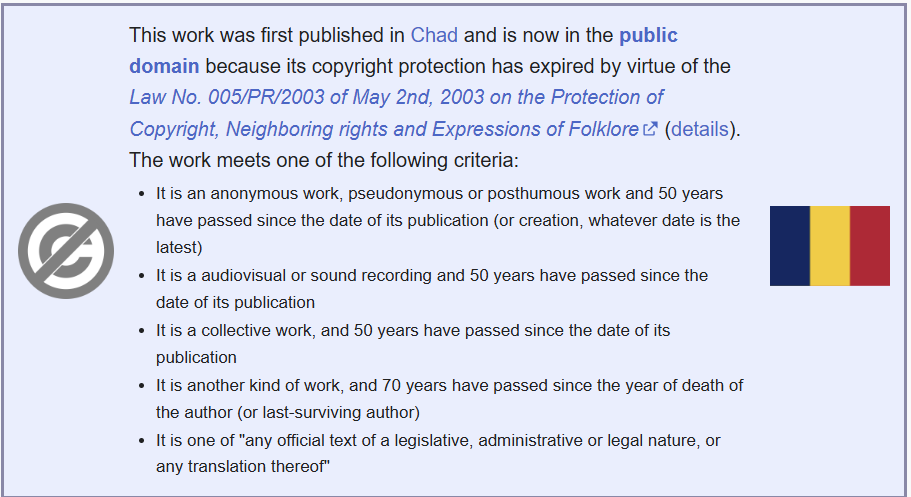

Vexillology, rather simply is the study of flags. As our world has developed, the countries that reside within have also changed, leading to development in the flags that represent them. A suprising amount can be gleaned from these changing flags, but I'm not particularly interested in the history of it all. I just know the flag of every UN recognized country - so here's some interesting ones.
To my knowledge, this flag is the most recent one to experience any major changes. It went from having 2 stars to having 3, representing the freedom of the country from the regime that they were previously living under. This minor addition to a single flag does really help to show that even small changes to flags do tend to be made for important reasons, and can help reflect the ever changing state of our world.
Without searching it up, I want you to try and find the difference between the following two flags:


If you said that the flag on the right has a slightly brighter shade of blue, then you just ruined this bit of the article. These are the two most similar flags in the world, being almost indistinguishable on their own and still rather hard to determine even when right next to each other. The one on the right (the ever so slightly brighter one) is Romania, and the one on the right is Chad. Here are some of the other most similar flags:
This one isn't actually the flag of a UN recognised country, but is rather an archipelago near Canada. The reason that it is here however, is that it has one of the most abhorrent flags I have ever witnessed. I don't really feel the need to explain this one too much, just take a look at it here:
Wikipedia Page For Saint Pierre And MiquelonThe two images used in this document were found on wikipedia, and are part of the public domain, evidenced by the following screenshots:

